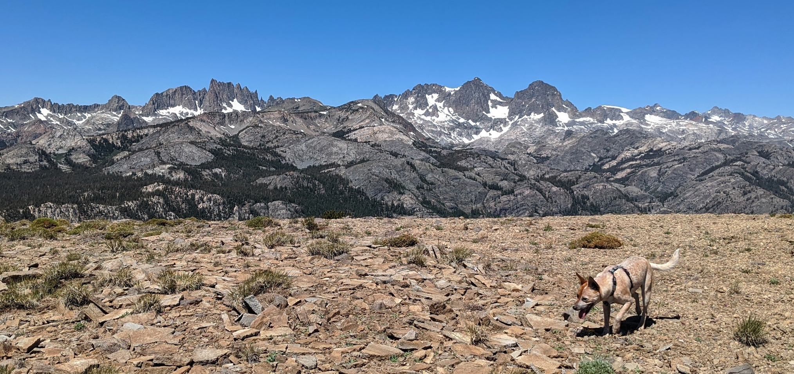
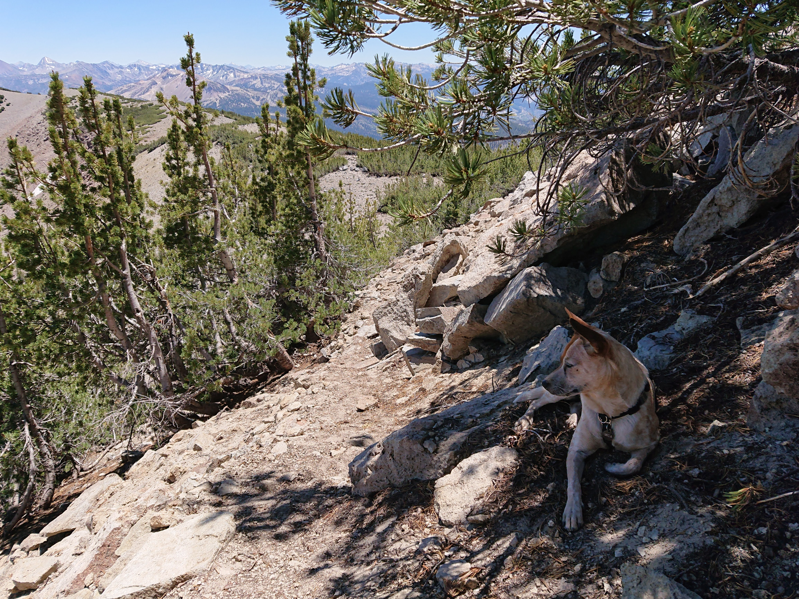
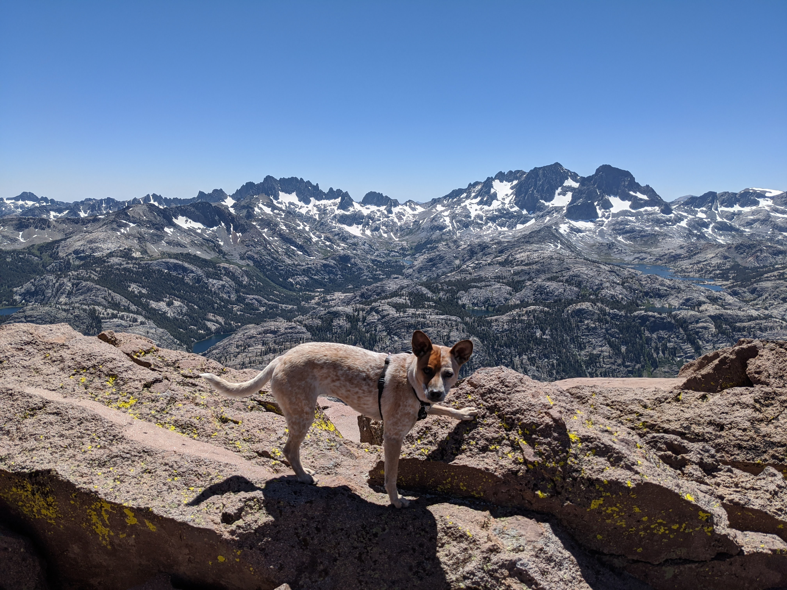
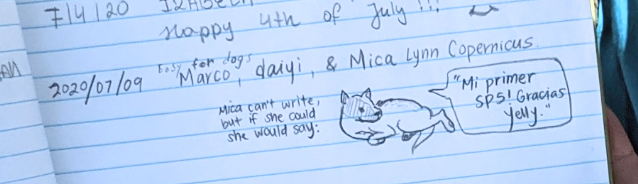

San Joaquin Mountain: My first SPS
No pudeo escribir mi blog, porque soy una perra. Mi CTO daiyi traduce la historia de mi primera aventura de peak bagging.
– Mica
✨
The summit of San Joaquin Mountain is situated so you can see both the dramatic granite of the Sierra valleys and hanging glacial lakes to the west, and also the volcanic red and white sand slopes to the east. The first 2.5 miles were on a OHV dirt road through a forest (also a popular mountain biking route), and the use trail after that is simple to follow because you just stay on the ridgeline the entire time. Easy for dogs like me.

The trail starts from Minaret Summit, a quick 10 minute drive from our house, which is why we pulled up late morning at 10am after a luxurious breakfast and coffee (I had kibble and water). The humans were strangely avoiding their computers this week, which ordinarily means spending every free moment climbing rock, but daiyi sprained a finger a couple days ago so we stuck to the ground this time.
During the forest trail, I ran laps around the humans and investigated the local wildlife!

While trail planning, daiyi had misread the map thinking that the end of the OHV road was the end of the hike, so we only packed for 5 miles of water. Actually we were only halfway there! and at Deadman Pass is where the shadeless sand and scree slopes began. Luckily, I am a dog, so I didn’t get sand in my shoe like the humans did. Sandals not recommended.

You can see the Minarets and Ritter and Banner on the opposing side of the valley for most of the ridge-top hike, they seemed to get closer and closer the entire time until you felt certain you would run right into them.
There was no water or snow except for a tiny patch on the side of the ridge, but I still found a couple mosquitos to snap at while the humans were stopped to eat their lunch burritos and plucots. The sun was out in full force, the sky was an uninterrupted blue. I was a hot dingo!

I sat down in the shade whenever I found the opportunity, but the humans kept us moving.
We reached the summit around 2pm.

While the humans pointed their phones into the air and signed the summit register, I took a powernap in Marco’s shade.

I can’t read, but this is what they drew:

Wait, we have to turn around?? Is this why the humans weren’t running circles the whole time like I was?
Here’s a view of the endless sandy ridge on the hike down:

That was my biggest day yet, but it’s only the beginning!
Edited: 2020-07-20
comments
No comments at the moment. Hey, you could write one \o/